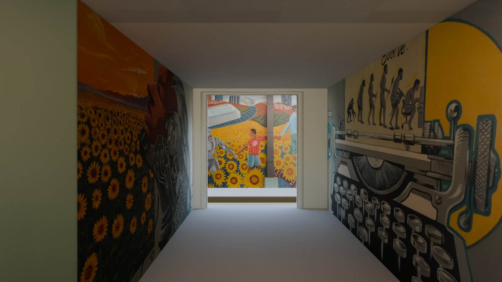
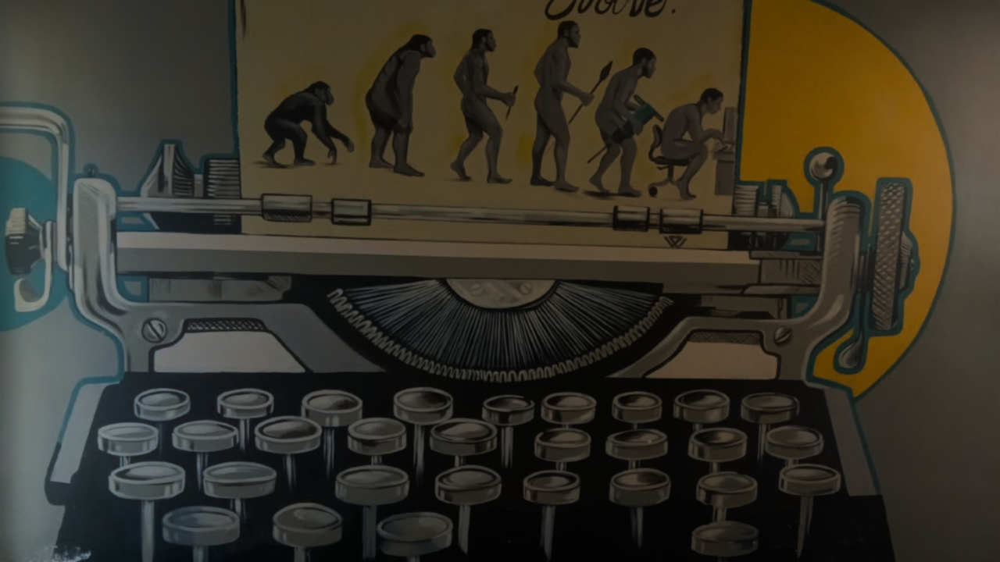
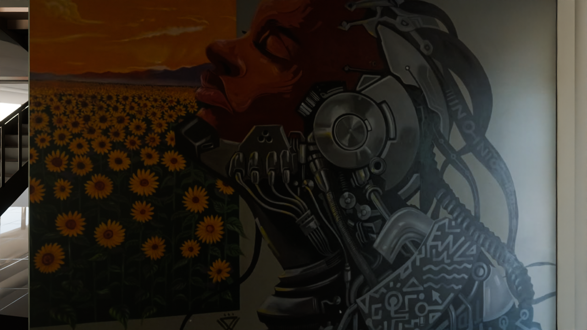
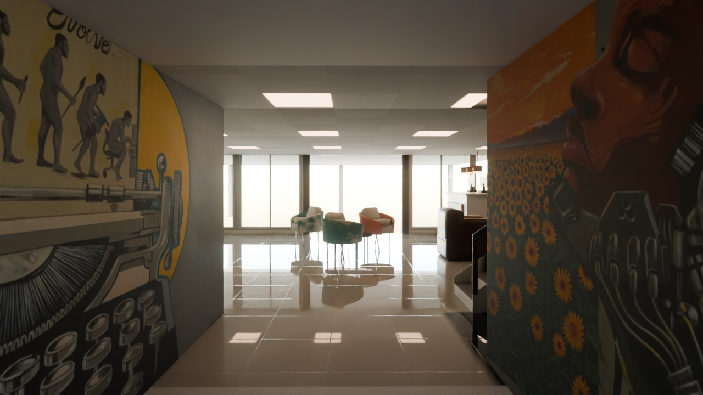
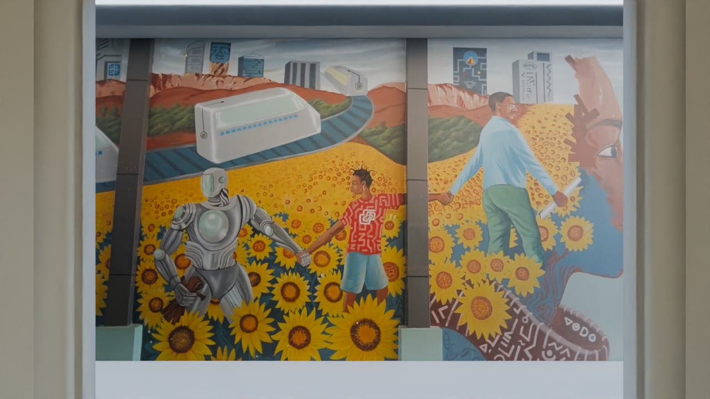
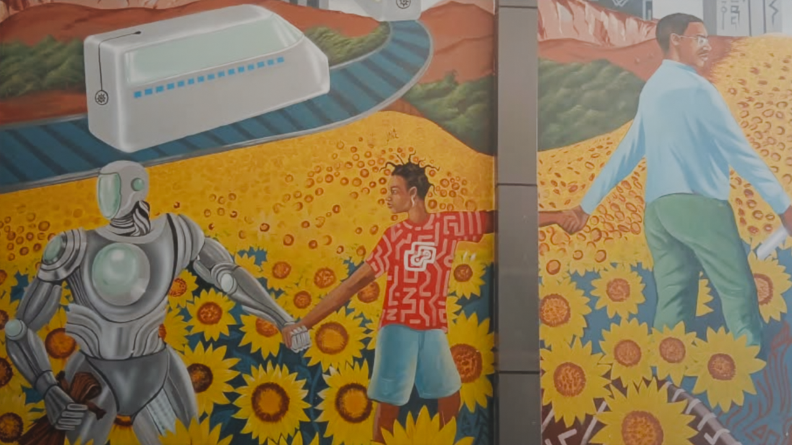

Rear Corridor and Auditorium Wall (murals) — National ICT Innovation Hub
The corridor from the Reception, past the stair, to the rear door and the Auditorium: its two painted walls and the Auditorium wall you face when you come out, each carrying the user's photo of that wall (folder 'reception corner towards aditrium'). Walls only - the rest is the existing scene.
Zone: corridor X -1.77..+0.61, Y -3.16..+1.28 between the ground-floor washrooms (Reception -> rear door), soffit 2.14 m; Auditorium north face Y -5.03 opposite the rear door. Each angle: the reference photo (where there is one) and the furnished scene; shell frames are not rendered for this room. The original meshes are untouched; no render contains people.
5 draft1 final
Zone check and photo mapping
high confidence - ray casts on the modelPlan: the passage between 'Ladies Room' and 'Gents Rooms', south of the stair (plan px x 425..487). Ray casts on the GLB (scripts/probe_rear.py, probe_out.txt): west face X -1.750 (Y +1.15) .. -1.785 (Y -3.10), east face X +0.611 from Y +0.17 (the stair is north of it), rear wall Y -3.16 with the door X -1.23..+0.37, soffit 2.14, no openings in either side wall. Auditorium north face Y -5.029, wall to 2.44 under the roof slab. Which photo goes where: Hub Space-218 (outside/, from the passage through the open rear door) shows the typewriter keys on the WEST wall, so the cyborg is on the EAST wall.

| Photo | Where it looks | Angle |
|---|---|---|
| WhatsApp Image 2026-10-25 at 23.46.16.jpeg | West wall (typewriter 'Evolve.') | 02, 01, 04 |
| WhatsApp Image 2026-10-25 at 23.45.57.jpeg | East wall (cyborg + sunflowers) | 03, 01, 04 |
| aditorium wall.jpeg | Auditorium north face, opposite the rear door | 05, 06, 01 |
Down the corridor to the rear door
photo no matching photoFrom the Reception end, south of the stair: the cyborg and sunflower mural on the east wall (left), the typewriter 'Evolve.' mural on the west wall (right), and through the rear door the Auditorium's mural wall.

FurnishedWest wall: the typewriter
photo WhatsApp Image 2026-10-25 at 23.46.16.jpegThe west wall (Ladies side) square on: the typewriter with the evolution strip, from the rear door end (left) toward the Reception.
 Photo WhatsApp Image 2026-10-25 at 23.46.16.jpeg
Photo WhatsApp Image 2026-10-25 at 23.46.16.jpeg
FurnisheddraftEast wall: cyborg and sunflowers
photo WhatsApp Image 2026-10-25 at 23.45.57.jpegThe east wall (Gents side) square on: the sunflower field and the cyborg portrait; the rear door is to the right.
 Photo WhatsApp Image 2026-10-25 at 23.45.57.jpeg
Photo WhatsApp Image 2026-10-25 at 23.45.57.jpeg
FurnisheddraftBack to the Reception
photo no matching photoFrom the rear door looking north: the typewriter on the left, the cyborg on the right, the Reception and its glazing ahead.

FurnisheddraftThe Auditorium wall you face
photo aditorium wall.jpegLeaving the corridor through the rear door: the Auditorium's north wall with the robot, child and sunflower mural, framed by the door.
 Photo aditorium wall.jpeg
Photo aditorium wall.jpeg
FurnisheddraftAuditorium wall, close
photo aditorium wall.jpegFrom the rear-door threshold, 1.7 m from the wall (the model's passage is 1.78 m wide): the middle of the mural.
Photo aditorium wall.jpeg
FurnisheddraftWhat differs from the photos (ranked)
- Corridor light: the existing Reception scene has no ceiling lights south of the Reception, so the corridor and its murals read darker than the phone photos (no light was added: walls only).
- The Auditorium wall is rendered from the corridor scene, through the rear door: the existing outside scene renders the covered passage almost black (the model's passage is 1.78 m wide under a canopy; the real one ~4 m).
- The dark grey pilasters in the Auditorium photo are part of the picture (flat), not raised from the wall.
- Each photo fills its wall's full height: the model's corridor soffit is 2.14 m (real ~3 m). Typewriter photo extended 0.41 m at the north end with its own grey wall; cyborg photo trimmed 0.47 m of plain wall at the south end; the black floor strip cut off the typewriter photo.
- The photos' own lighting is part of the texture (the bright patch on the plain wall right of the cyborg).
Dropped at real scale
| Item | Why |
|---|
Free camera
Free-camera page: not built yet.
Files and last updated
| File | Kind | Size | Modified |
|---|---|---|---|
| 01_corridor_to_auditorium_furnished.png | final | 1.5 MB | 2026-10-26 09:09 |
| 02_west_wall_typewriter_furnished.png | DRAFT | 1015.8 KB | 2026-10-26 08:51 |
| 03_east_wall_cyborg_furnished.png | DRAFT | 1.0 MB | 2026-10-26 08:52 |
| 04_corridor_to_reception_furnished.png | DRAFT | 1003.5 KB | 2026-10-26 08:53 |
| 05_auditorium_wall_from_door_furnished.png | DRAFT | 1.1 MB | 2026-10-26 08:53 |
| 06_auditorium_wall_passage_furnished.png | DRAFT | 1.2 MB | 2026-10-26 08:54 |
Render settings
- Walls
- West X -1.75..-1.785 (Y -3.16..+1.28), east X +0.611 (Y -3.16..+0.17), Auditorium north face Y -5.03 (X -2.60..+1.74, centred on the rear door X -1.23..+0.37); ray casts on the GLB (probe_out.txt)
- How
- Each photo is a new plane 3 mm in front of its wall; nothing else changed (render_reception.py scene, beyond neutral)
- Renderer
- Blender 4.2 LTS, Cycles, CPU only (i5-10505)
- Draft settings
- 1280 x 720, 32 samples, OIDN (finals 1600 x 900, 256 samples)
- Tone mapping
- AgX, Medium High Contrast, exposure -0.22 (same as the Reception)
- 360 tours
- Panoramas that see these walls re-rendered with the murals in their own scenes: Reception p00-p03, p05-p11, outside o00, o15-o17, Founder Space 1 p00 (originals in rear_corridor/backup/tour/)
- Building page
- The three murals are drawn on the realtime building: photo x the light baked on each wall in the building's bake scene (world_bake_fix.blend)
- People
- None rendered (the people in the Auditorium mural are part of the painting)